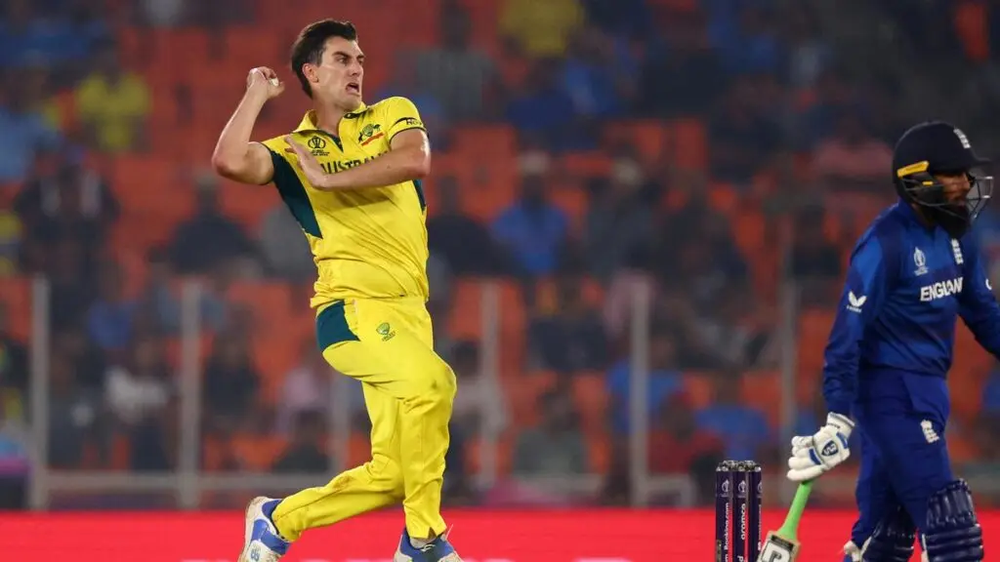

1.mitchell starc
The Australian speedster Mitchell Starc emerged as the costliest player in IPL history with a staggering bid of Rs 24.75 crore. Kolkata Knight Riders (KKR) secured Starc’s services, banking on his stellar performance in the ICC Men’s ODI World Cup 2023. Starc, with 34 wickets from 27 games in previous IPL seasons, adds firepower to KKR’s bowling arsenal.
2.pat cummins
Patrick James Cummins is an Australian international cricketer who captains the Australian cricket team in Test and One Day International cricket. A right-arm fast bowler, with good accuracy, line and length, he is widely regarded as one of the greatest Test bowlers of all time
3.darl mitchel
New Zealand’s batting sensation, Daryl Mitchell, showcased his mettle in the World Cup, amassing 552 runs at an average of 69. Chennai Super Kings (CSK) recognized his potential, securing the promising right-hander for a hefty sum of Rs 14 crore. Mitchell’s consistent performances make him a valuable asset in CSK’s batting lineup.